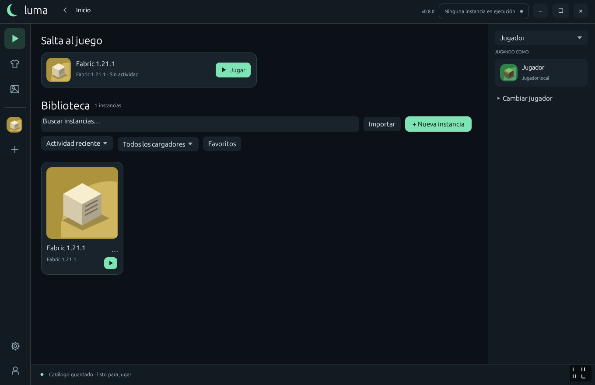
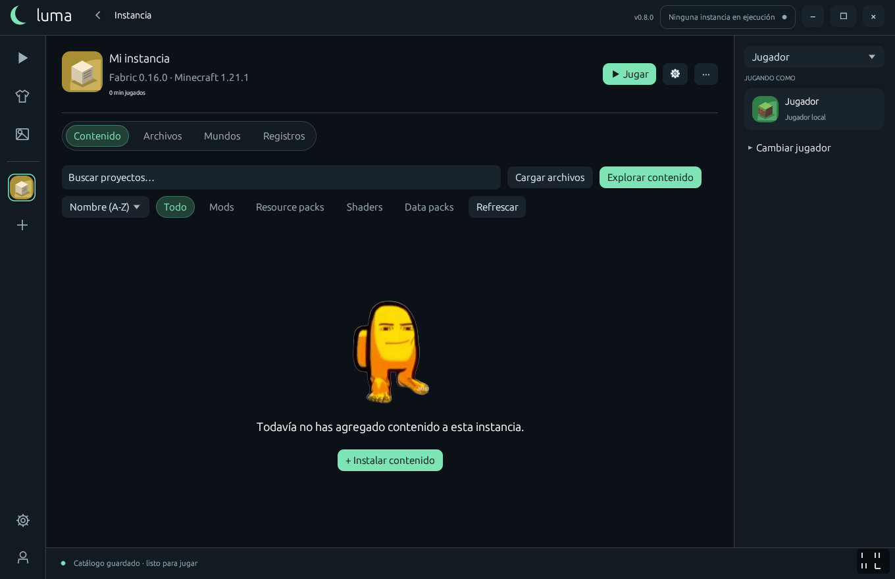
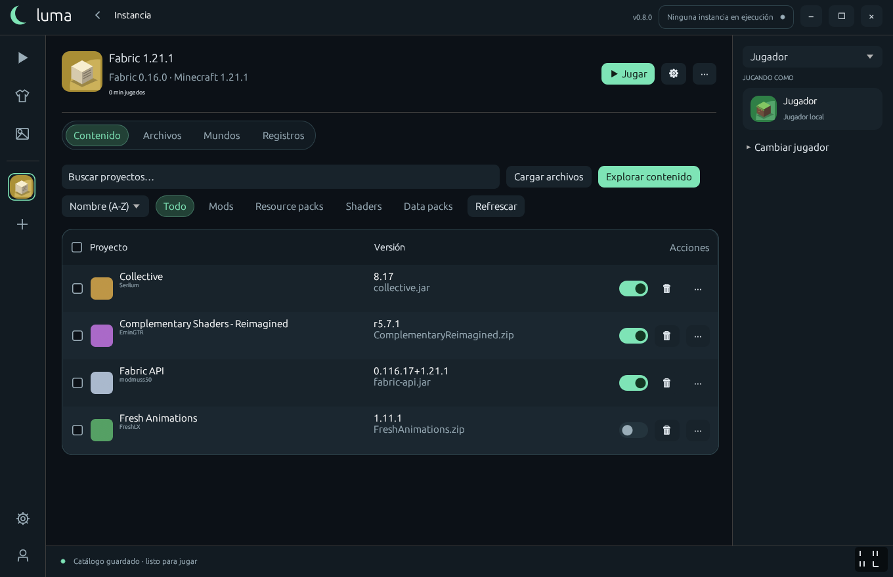
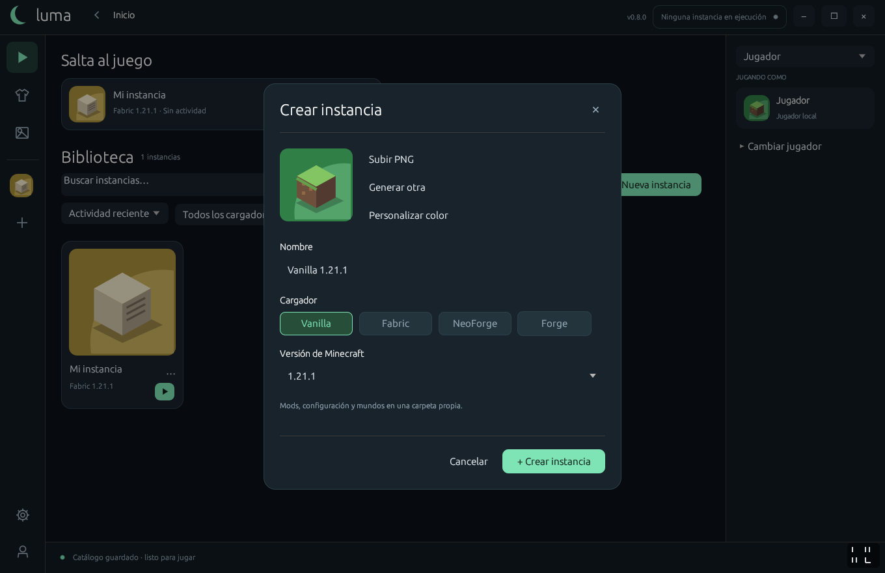
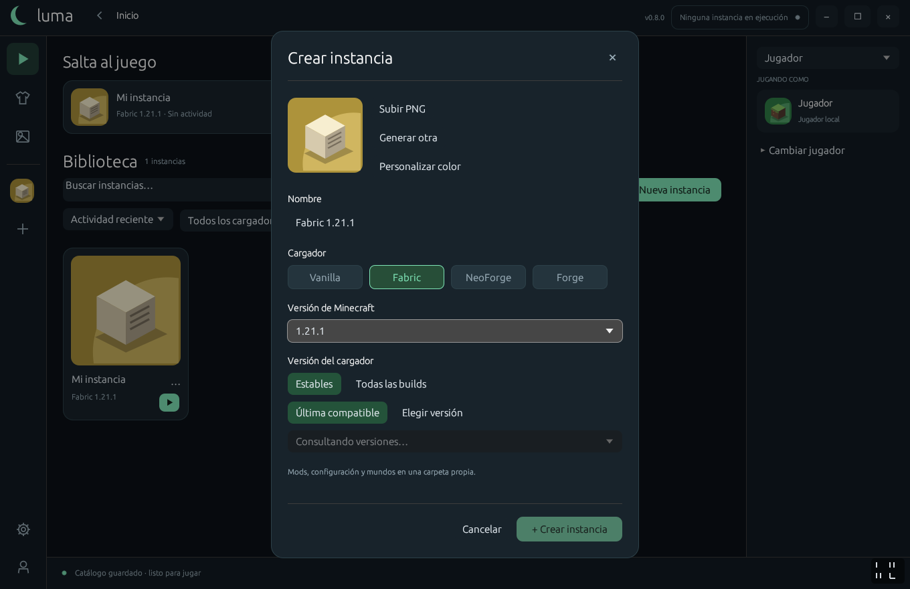
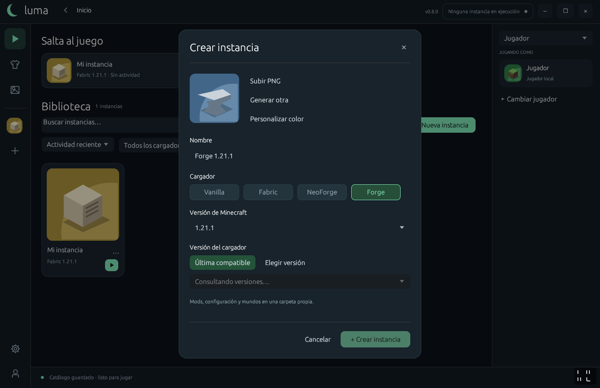
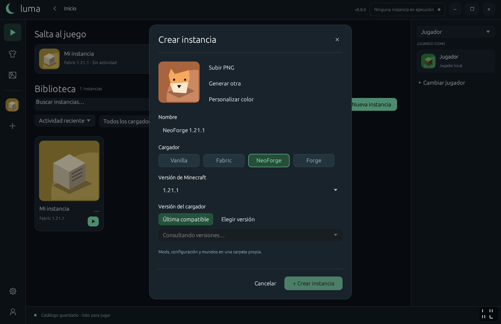
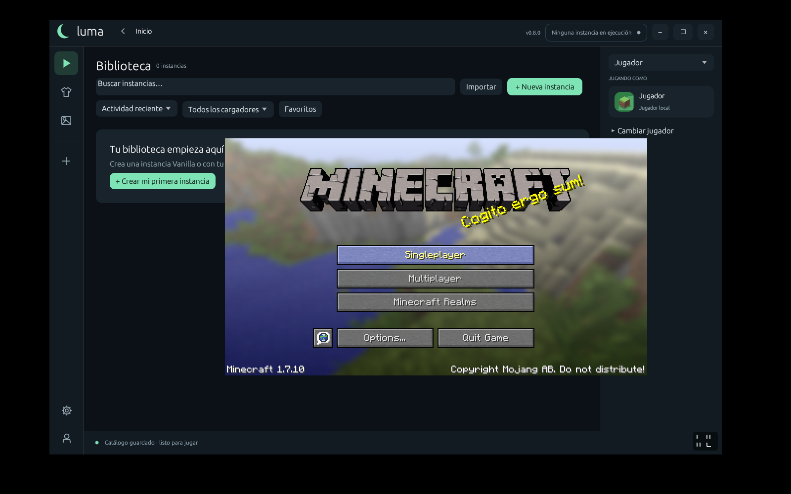

Única página oficial y original de Luma
Todas tus instancias de Minecraft, en un solo lugar.
Luma es un software gratuito para perfiles offline de Minecraft Java, disponible para Windows y Linux. Crea instancias con Fabric, Forge o NeoForge, instala mods desde Modrinth y organiza tu forma de jugar.
Windows x64 y Linux x64. Elige tu sistema en Otras descargas.
Gratuito y para perfiles offline. Proyecto independiente, sin afiliación con Mojang ni Microsoft.
Lo que hace Luma
- Instancias separadas
- Cada instancia tiene sus propios mods, mundos y ajustes. Duplícala, renómbrala o bórrala sin tocar las demás.
- Fabric, Forge y NeoForge
- Elige el loader y la versión de Minecraft al crear la instancia. Luma descarga Java y todo lo que falte.
- Mods desde Modrinth
- Busca e instala mods, resource packs y shaders dentro de Luma. Las dependencias obligatorias se añaden solas y cada archivo se verifica.
- Juega sin conexión
- Una vez instalada una versión, puedes abrirla sin internet. Tus mundos y tu configuración se quedan en tu equipo.
Luma en acción
















Capturas de la interfaz de Luma.
Otras descargas
Elige el instalador o la edición portable para tu sistema. Las descargas se obtienen de los releases oficiales de Luma en GitHub.
Última versión estable
Cargando archivos…
Versiones portables · historial de versiones
Cargando versiones…
Instala Luma en tu equipo
Windows x64
- Descarga Luma-Setup.exe con el botón de arriba y ábrelo.
- Si Windows muestra Windows protegió su PC, pulsa Más información y luego Ejecutar de todas formas.
- Permite la solicitud de administrador del instalador. El instalador copia Luma a Program Files.
Ese aviso aparece porque las versiones de Luma todavía no tienen firma de editor público. Puede aparecer mientras el proyecto obtiene su firma de editor. Descarga siempre desde esta página o desde el release oficial.
Para comprobar que tu archivo es el publicado, calcula su hash en PowerShell y compáralo con SHA256SUMS.txt:
Get-FileHash -Algorithm SHA256 .\Luma-Setup.exeLinux x64
En Debian o Ubuntu, descarga el paquete .deb e instálalo con tu gestor de paquetes. Para instalar por usuario, extrae el .tar.gz y ejecuta ./install.sh dentro de esa carpeta. Requiere un escritorio X11 o Wayland y OpenGL 3.3.
Apoya un proyecto independiente
Invítame un café
Luma es gratuito. Si te gusta el proyecto y quieres apoyar su desarrollo, puedes invitarme un café. Tu apoyo es voluntario y ayuda a seguir mejorándolo.